三．希腊值的含义
序:各种希腊值特性
delta
call 的价值变化：标的相对于行权价的变化 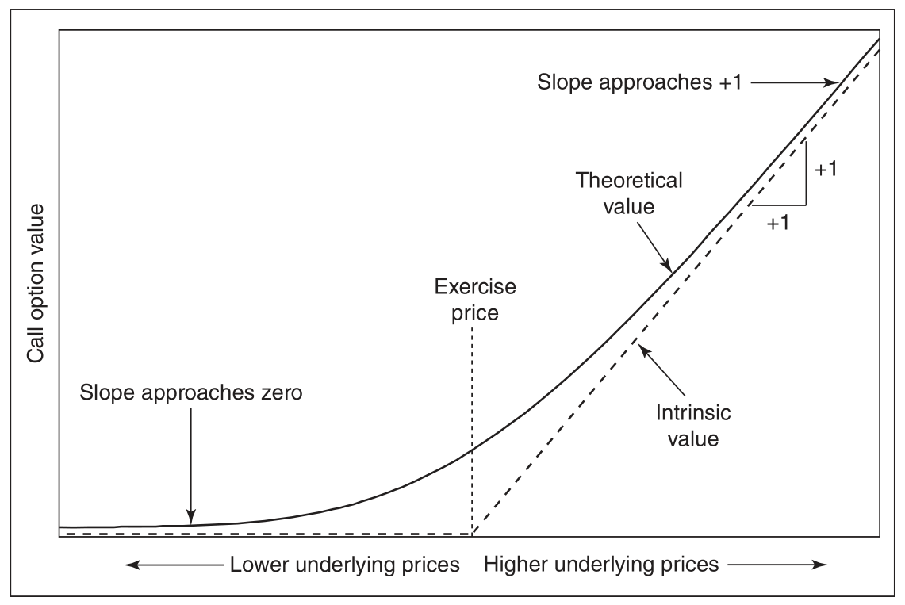
put 的价值变化：标的相对于行权价的变化 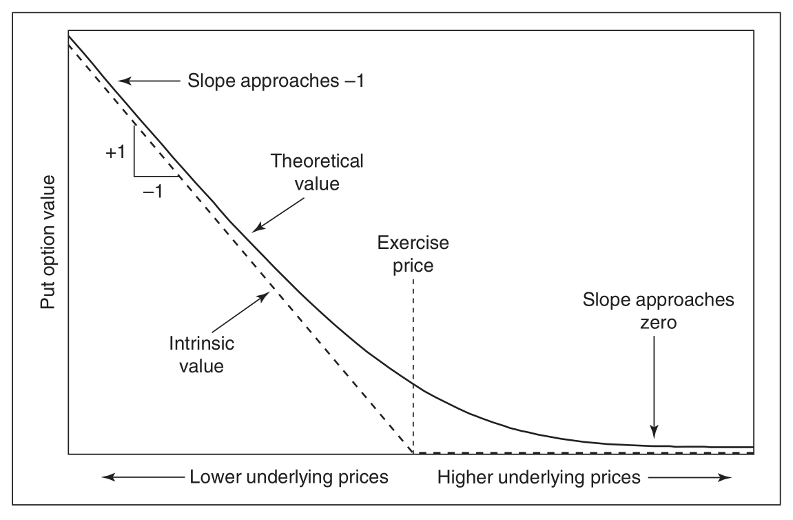
delta 随标的的变化 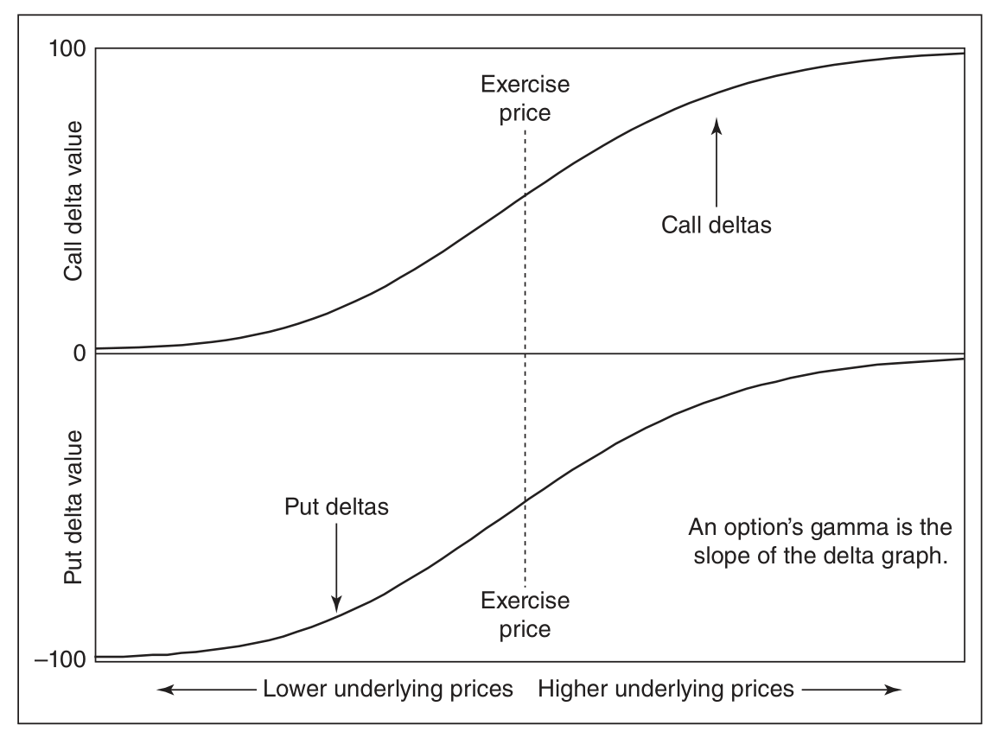
call_delta 随 volatility 的变化 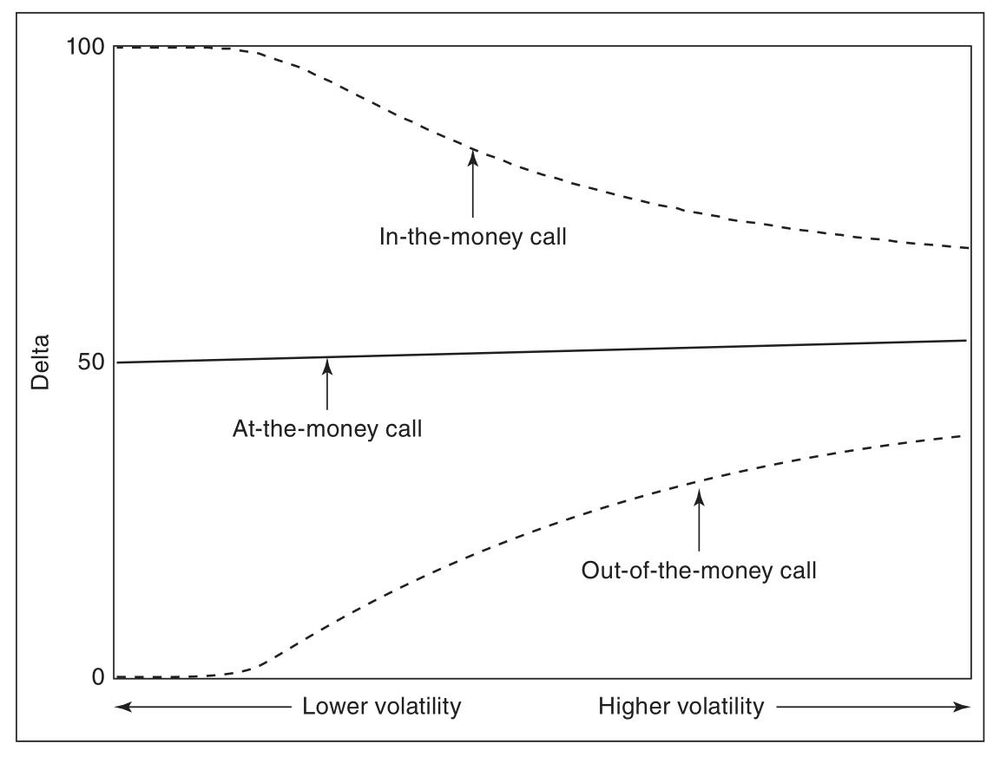
put_delta 随 volatility 的变化 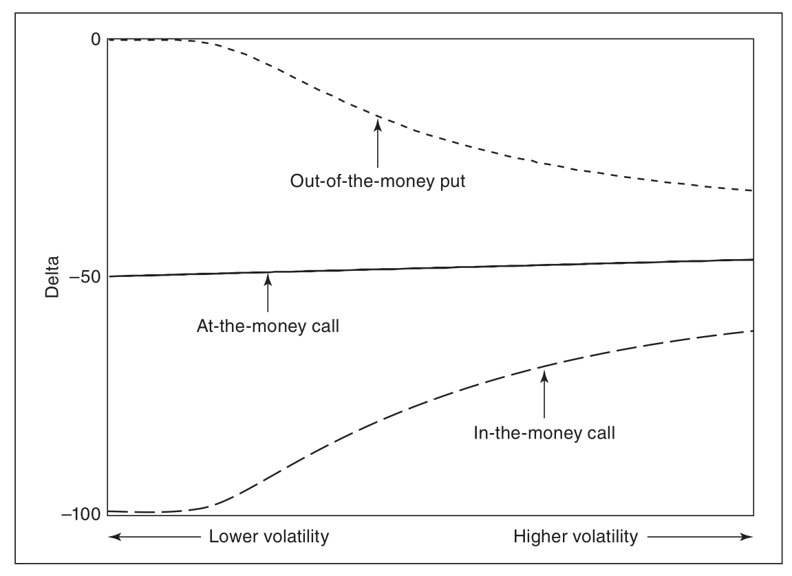
call_delta 随到期时间变化 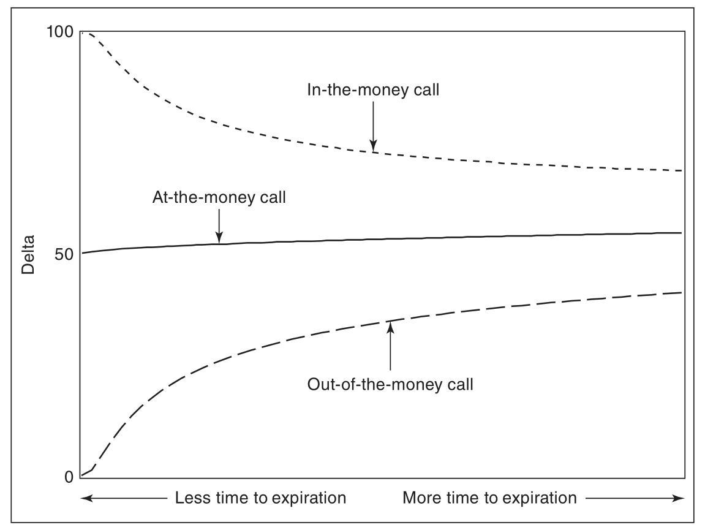
put_delta 随到期时间变化 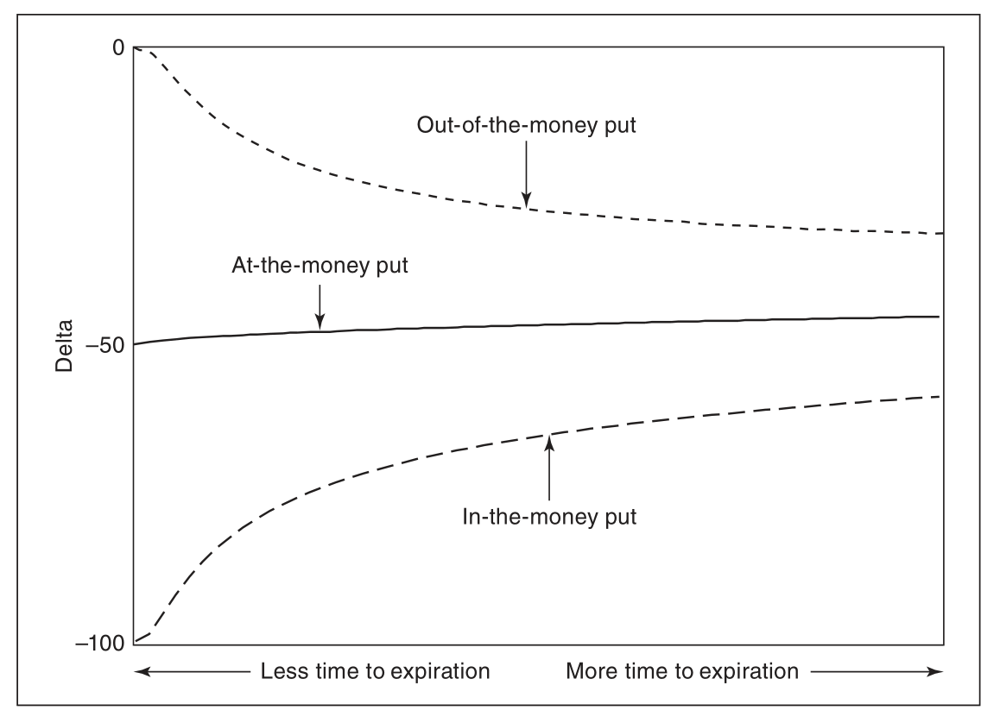
call_delta 随着时间推移或者波动率下降的变化 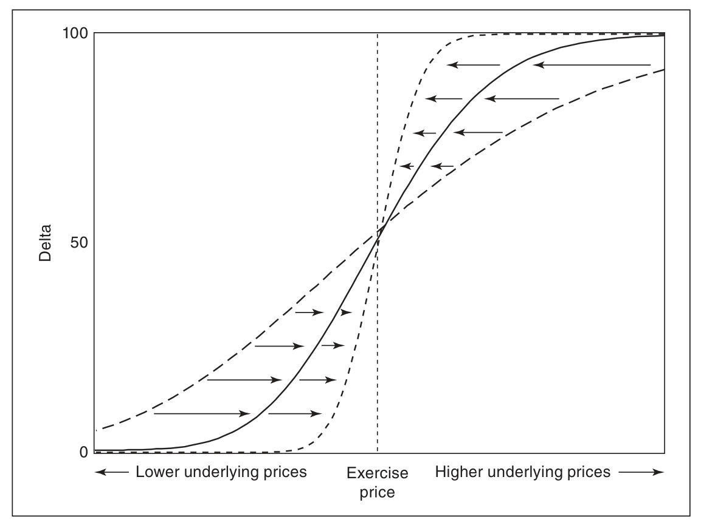
Vanna
Vanna：作为 Delta 对波动率的偏导，或者 Vega 对标的价格的偏导． 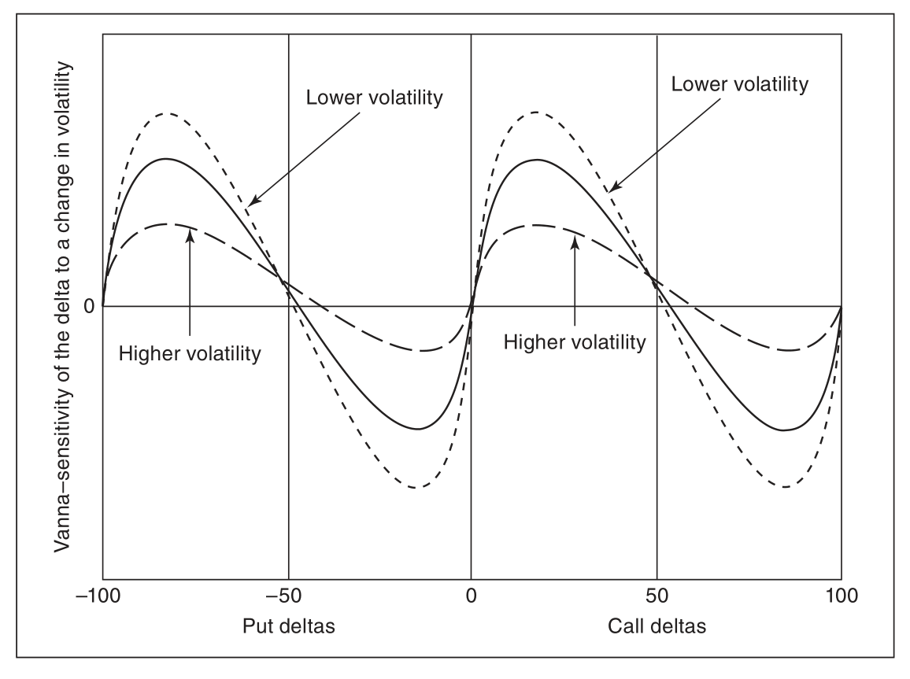
theta
theta：期权价格随着标的价格变化，此处取了绝对值(call 与 put 一样，都是负的！跟恒正 GAMMA 比较) 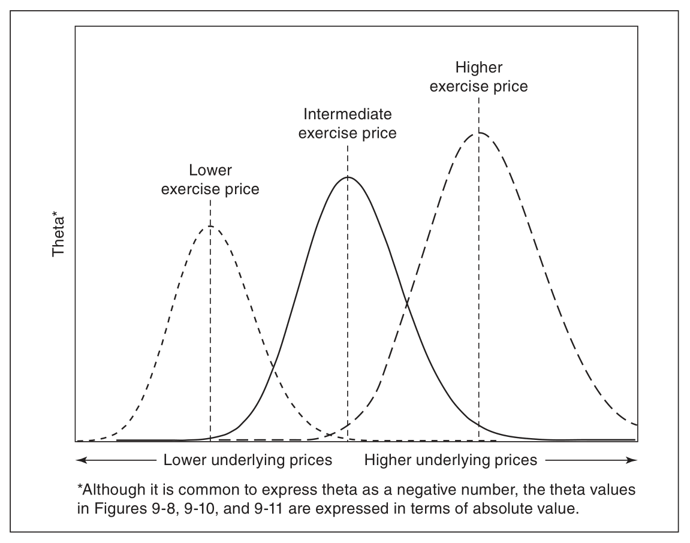
vega

gamma
恒正的 GAMMA： 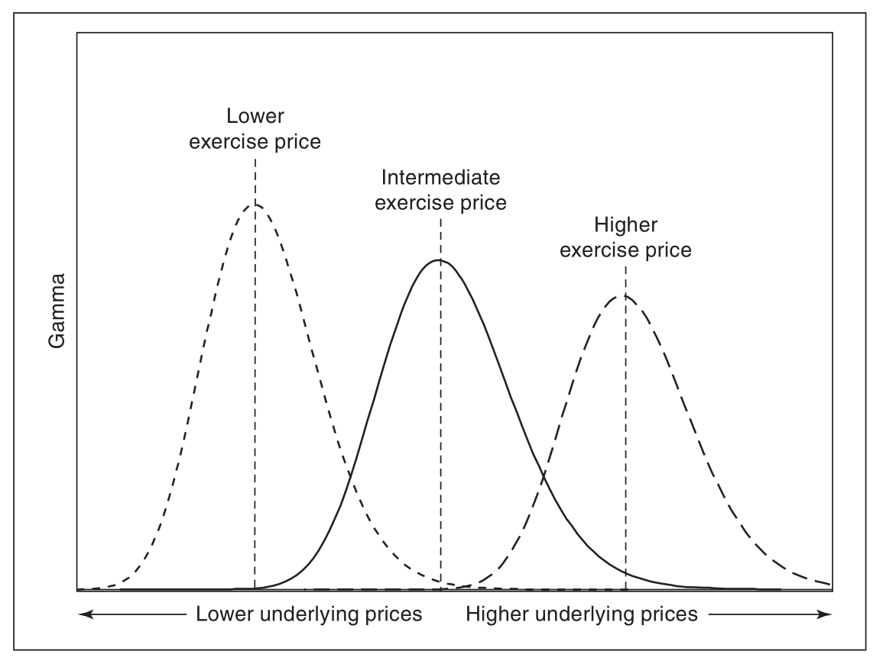
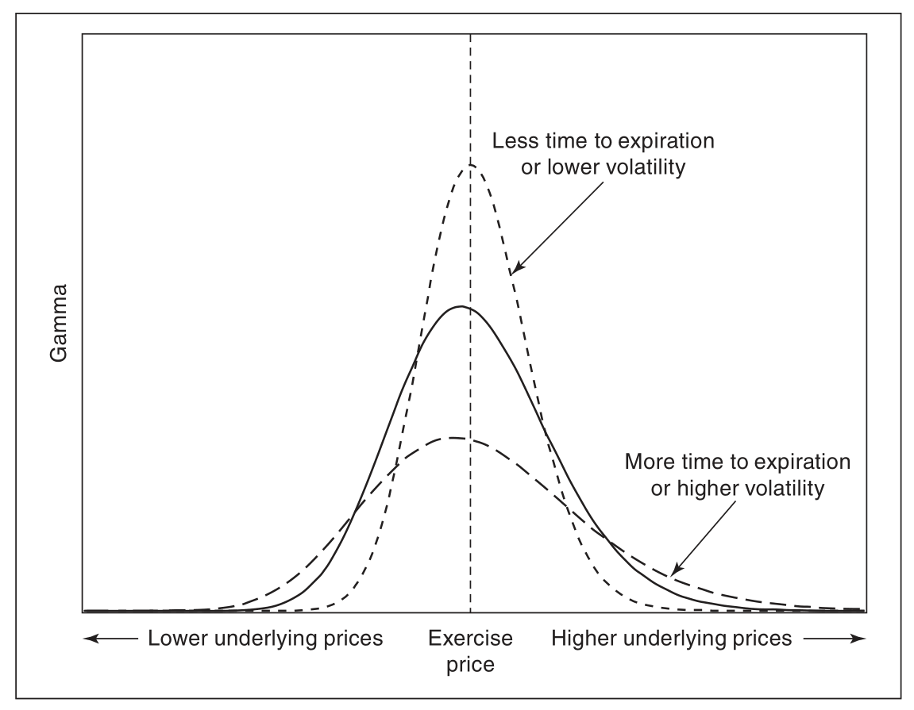
其中
3.0 随机分析几大基础定理
3.0.1 Radon–Nikodym
3.0.1.1 Radon-Nikodym 定理
测度空间 上定义有两个 -有限测度： 和 ．定理表明：如果 （i.e. 关于 绝对连续），则存在一个 -可测函数 s.t. 可测集，
-有限： 是一个测度空间， 是上面一测度． 称为其上一个 -有限测度若 可以写成至多可列个有限测度集合的无交并．
绝对连续：实线上 Borel 子集上的测度 称为关于 Lebesgue 测度 绝对连续若对任何 的可测集 有 ．记为 ．
等价测度： 和 称为等价测度若 且 ．
3.0.1.2 Radon-Nikodym 导数
上述函数 在几乎处处意义下唯一，通常写为 ，通常称为 Radon-Nikodym 导数．
3.0.2 Girsanov 定理
二次变差（quadratic variation）：，，计算公式为 ．
是 Wiener 概率空间 上的 Wiener 过程．令 是适应于 Wiener 过程生成的自然域流 的可测过程，．
定义 关于 的 Doléans-Dade exponential 如下： 其中 是 的二次变差．若 是严格正的鞅，那么可以定义 上的概率测度 s.t. 有 Radon-Nikodym 导数： 则对每个 ， 限制在未扩充的 -域 上和 限制在 是等价的．进一步，若 是 下的局部鞅，那么过程 是 下的在 上的局部鞅．
推论：若 是连续过程， 是 下的布朗运动，那么： 是 下的布朗运动．
3.1 BS公式含义
Moneyness 指的是标的现价相对于行权价格的关系．下面考虑的是远期 F，
进行标准化后为：
下面我们记 ，故
标准的 moneyness 为如下均值： 大小关系为： 每级相差 ，这几项都在单位标准差内，所以把这几项转换成百分数，用标准正态的累计密度函数来评估．对这几个量的解释很精细(subtle)，与风险中性测度有关．简单来说，有如下解释：
- 是二项 call option 的未来价值，或者风险中性下期权会在价内行权的可能性，with numéraire cash（风险中性资产）
- 是标准化的货币价值的百分比（概率？）
- 是 Delta，或者风险中性下期权会在价内行权的可能性，with numéraire asset（注意与上面的不同之处，cash 与 asset，债券与标的资产）
These have the same ordering, asis monotonic (since it is a CDF): 因为 是单调的（是一个CDF），他们有大小关系
3.2 计价单位的变换
wiki 概述：
在证券交易的金融市场中，计价单位的变换可以用来对资产定价．例如，若 exp 是 时刻投资在货币市场的 元在 时刻的价格，那么以货币市场定价的所有资产（记作 ）在风险测度（记作 ）下是鞅： 现在假定 是另一个严格正的交易资产（因此在货币市场的定价下是一个鞅），那么我们能根据 Radon-Nikodym 导数定义一个新的概率测度： 根据贝叶斯定理可以证明 关于新的计价单位 在 下是一个鞅：
知乎总结：
3.2.1 概述
在探讨计价单位变换之前，我们先来粗略的看一下这个公式长什么样子: ，这里 是一个计价单位 (Numéraire)．乍一看，这个式子和风险中性定价公式 长得一模一样，只不过是将债券 替换为了另一个东西 ，然后从 测度下的期望变成了在 下的期望．
直观上来理解，就是这个意思，风险中性定价公式其实是以债券为计价单位，从而得出的资产的期望价值，那在某些情况下，我们也可以用其他资产作为计价单位，来对某些资产进行定价，或者是进行计算上的简化，这就是计价单位变换的动机所在．
其实可以看到，计价单位变换的本质，就是从一个 测度转化为另一个 测度，所以这个公式的核心，是找到连接两个测度的 Radon-Nikodym 导数 ．
3.2.2 计价单位变换公式的推导
3.2.2.1 RN 导数的存在
这里我们想到的第一个问题是，对于任意一个给出的计价单位 ，存在这样的 RN 导数来定义测度 么？
这里我们需要注意的是，计价单位变换公式中，要求 是任意一个价格严格为正的资产，由先前的知识可以知道，这样的资产以债券计价时 (或者说以货币账户计价时) 是一个鞅，即 在测度 下是一个鞅，这样良好的性质，保证了 RN 导数 的存在性． >定理( 的存在性). 设测度 与 为 上的等价摡率测度，则存在 ，满足 ，且 ．
根据这个定理，我们可以找到那个存在的 ．可以验证，这样定义的 严格为正，且有 ，满足上述定理： 定义 RN 导数过程 ，可以证明 在原本的测度 下是一个 -鞅： (鞅性质)．
3.2.2.2 RN 导数的性质
这里设 是由上一节中的定义 给出．
则在两个测度下期望的运算之间，可以用 RN 导数过程来联系．
设 为 -可测的随机变量．给定 ，则无条件期望之间的关系: 给出简单的证明: 更进一步的，给定 ，则条件期望之间的关系: 这里的其实是贝叶斯定理 (Abstract Bayes' Theorem) 的结论．
定理 (Abstract Bayes). 设 为 上的随机变量, 是 上由 导数 定义的测度．设 为 -代数且 ，则有: ．
3.2.2.3 计价单位变换公式
首先我们有风险中性定价公式 ，接着根据定义的 RN 导数 ，可以得到:
对于 conditional on 的公式，根据 Abstract Bayes' Theorem 有:
3.2.2.4 新测度下的股价
根据这个计价单位变换公式，在实际运用时我们首先需要找到合适的计价单位 ，然后将风险中性定价公式中的 替换为 ，接着求一个在测度 下的期望 就可以了．
但要求出 ，我们还需要知道某个随机变量在 下的分布，或者说需要知道它新的 dynamics 是什么，此时还需要 Girsanov 定理来帮助我们找到 下的布朗运动 和 下的布朗运动之间的关系 ．
定理 (Grisanov). 设 是 上的布朗运动, 为一个相适应的过程，定义指数鞅过程：，其中 是初值 的相适应的过程， 表示二次变差．则可以定义新的概率测度 ．如果在概率测度 下 是一个布朗运动，那么: 在新的概率测度 下也是一个布朗运动．
我们这里以股价 为计价单位来运用 Girsanov 定理，找到 与 之间的关系．根据 的定义，有: 根据 Girsanov 定理，可以得到 ，于是在 下，对数价格 的 SDE 为:
3.2.3 一些栗子
根据风险中性公式， 0 时刻欧式看涨期权的价值应为: 此时，如果我们不想计算一个比较复杂的期望，则可以用 作为计价单位处理第一项，得到: 可以看到，我们其实是将原式转化为求事件 分别在 和 下的概率．
由上一节可以知道，在 下有 ，则：
此时可以很快的得到欧式看矤期权的定价公式:
上述推导也说明了， 表示在 下事件 的概率，即代表了在风险中性世界 中，该看涨期权在到期日被执行的概率，而 表示在 下事件 的概率，即 在以股价为计价单位的世界中，该看涨期权在到期日被执行的概率．